An entryway without a bench is missing its single most functional piece of furniture.
Somewhere to sit while putting on shoes, somewhere for a bag to land, somewhere that makes the whole space feel finished rather than just passed through.
These 8 styles cover the range worth considering, from rustic to fully upholstered.

Why an Entryway Deserves a Bench
A bench solves a real daily problem, putting on and taking off shoes, that most entryways otherwise handle badly, usually by someone balancing on one foot.
It also anchors the whole space visually, giving an otherwise transitional area a genuine piece of furniture to build around.
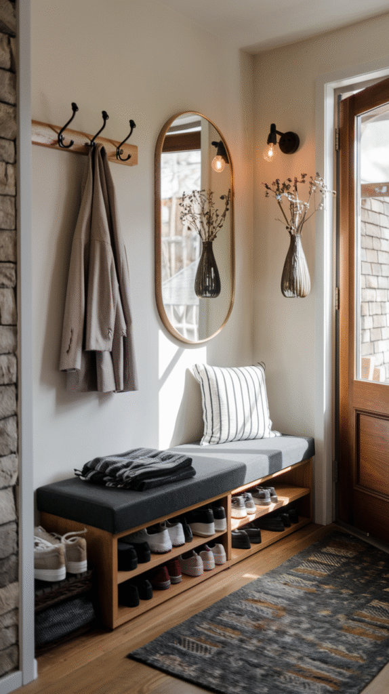

1. Cushioned With Baskets Underneath
A simple cushioned bench with open storage baskets tucked beneath combines comfort with easy-access, visible organization.
This works well for a household that wants storage without a fully enclosed, harder-to-access cabinet underneath.
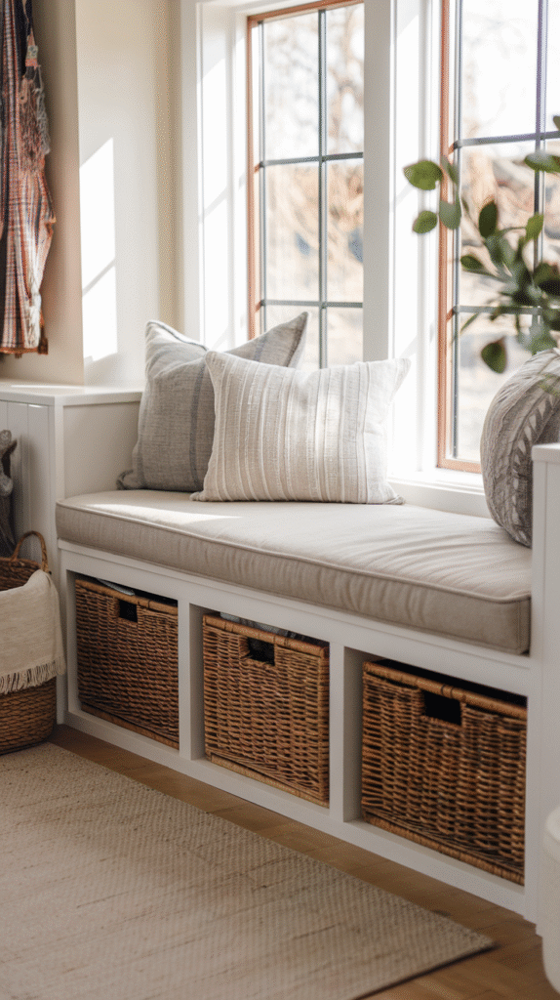
2. A Bench That Doubles as Art
A sculptural or unusually shaped bench works as a visual statement first and a functional seat second.
This suits an entryway that is more about making an impression than handling heavy daily shoe-removal traffic.
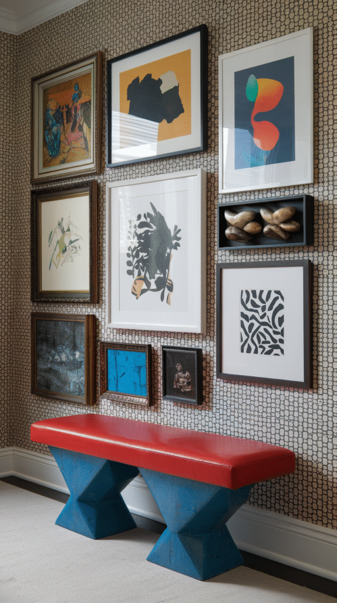
3. Vintage or Repurposed
An old church pew, a repurposed trunk, or a genuinely vintage find brings character that new furniture cannot replicate.
This is one of the more unique options on this list, since no two vintage pieces are ever quite the same.
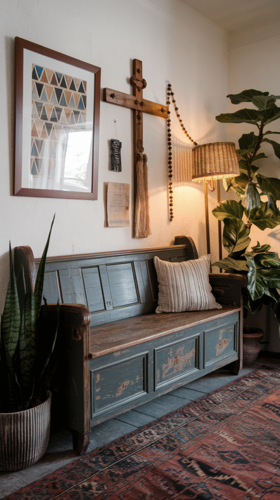
4. Multifunctional for Small Spaces
A narrow bench that also works as a plant stand, a bookshelf end, or a slim console does more per square foot in a tight entryway.
This style is worth prioritizing for anyone working with limited entry space, where a single-purpose bench is harder to justify.
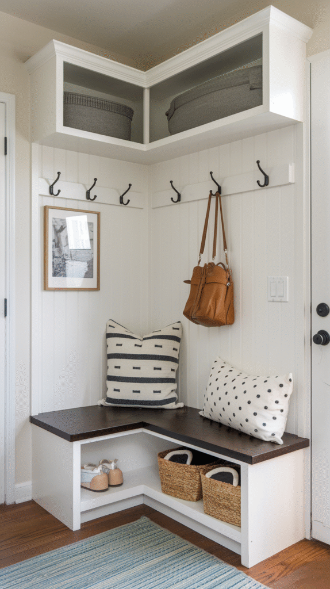
5. Upholstered
A padded, fabric-covered bench brings genuine comfort that a hard wood or metal seat does not offer.
A durable, stain-resistant fabric matters more here than in almost any other room, given how much daily wear an entryway bench takes.
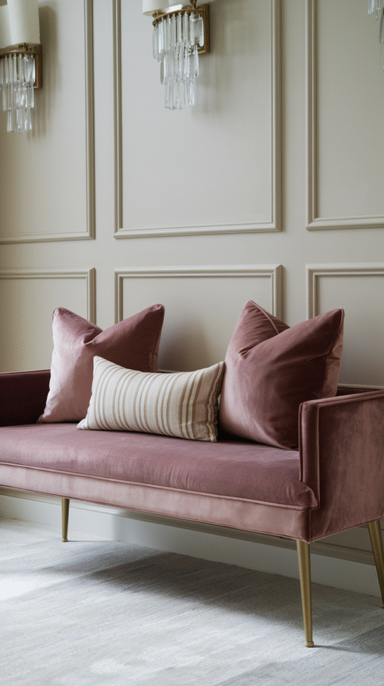
6. Built-In Storage
A bench with a lift-top seat or drawers underneath solves two problems in one piece of furniture, seating and somewhere to stash shoes, scarves, or seasonal gear.
This is one of the most practical styles on this list for a household that actually accumulates entryway clutter.
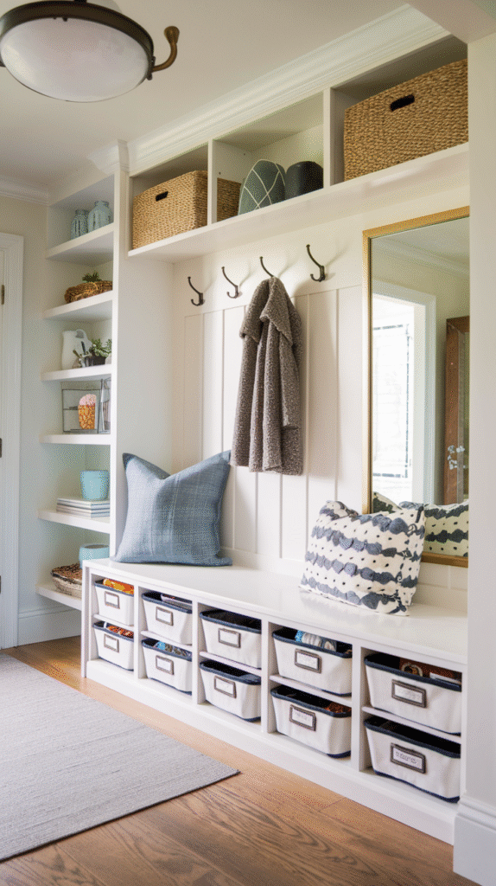
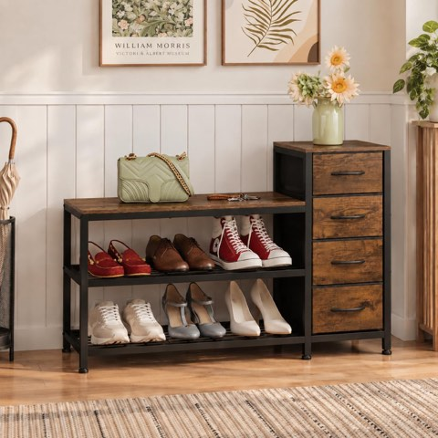
EXOTICA Industrial Shoe Storage Bench with 4 Drawers and Seat, Rustic Brown
Shop on Amazon7. Modern Minimalist
Clean lines, a simple silhouette, and a neutral finish suit a more contemporary entryway better than an ornate style would.
This works especially well in a smaller space, where a slim, low-profile bench avoids visually crowding the entrance.
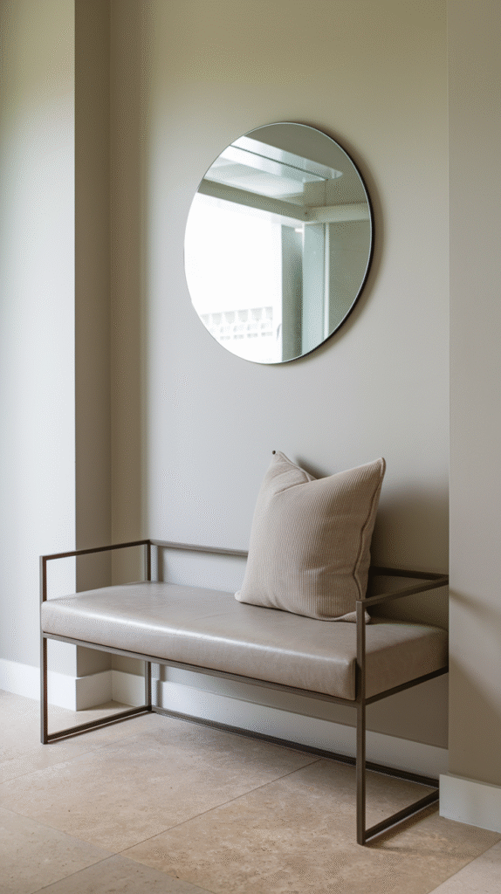
8. Rustic Wood
A solid wood bench with visible grain and a slightly weathered finish brings real warmth and character to the entrance.
This style tends to age well, picking up more charm over years of actual use rather than looking worn out.
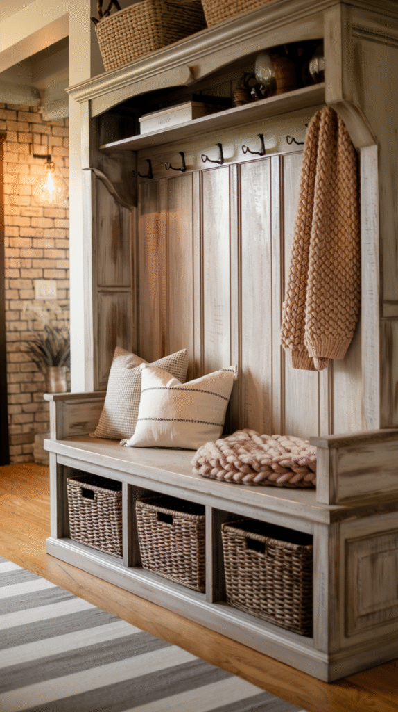
Finishing Touches That Matter
A cushion, a throw pillow, or a small tray on top turns a purely functional bench into a styled piece of furniture.
A hook or two mounted just above it completes the function, giving coats and bags a spot that does not end up on the bench itself.
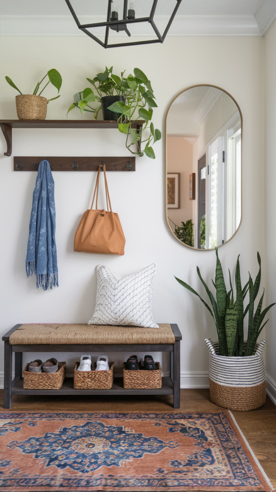

Make Your Entryway Work for You
None of these 8 styles is the universally correct choice.
A rustic or vintage bench suits a character-filled entryway; a modern or multifunctional one suits a smaller, more streamlined space.
Whichever style gets chosen, the right bench turns an entryway from a space people pass through into one they actually use.
Measure the space first, then pick the style, since even the nicest bench becomes a problem if it blocks the door.